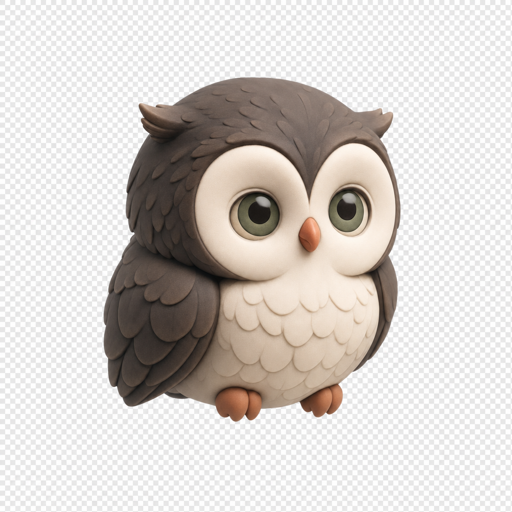
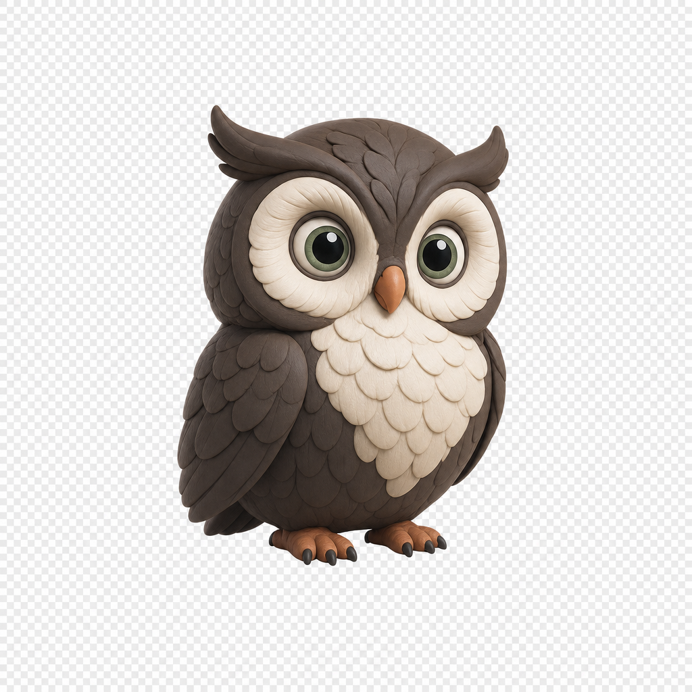

Mascot — the clay owl


Soft matte-clay 3D style. Warm brown feathers, cream face/belly, sage-green eyes, terracotta beak and feet. Owl = wisdom + keeper of hidden treasure. Any logo should feel like it belongs in this family: rounded, gentle, slightly toy-like — not corporate or sharp.
Typography & wordmark
Page title — semibold, tight
Body — calm grey, generous line height.
TROVE · small caps, wide tracking, violet in headers
System font (SF Pro / Roboto). No serif, no script. The in-app wordmark is pure type — a logo mark must sit beside it without fighting it.
Brand traits
CalmWarmPrivate
Rounded geometrySoft matte, no glossReads at 48px
Works monochromeArchive, not to-doNo gradients-on-white corporate look
Logo guidance: rounded, toy-like shapes echo the clay owl; periwinkle→violet family echoes the app; avoid sharp edges, metallic effects, and generic cloud/sync iconography. The owl itself is a legitimate logo subject — a flat, simplified owl head in Deep/Blue-deep would tie mascot and mark together.